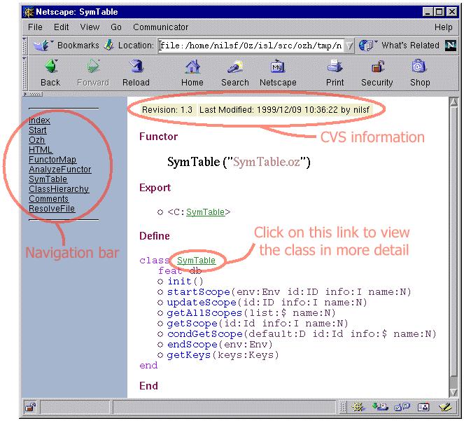

The aim of this software is to create interface descriptions for functors and show dependencies between functors. Produced interface descriptions can later be accessed in an easy way using a web-browser.
Current version: 1.1 (06-Nov-2000), see change log for more information.
Check out generated web-documents for Tk and TkTools and Remote
The idea is to give Mozart-developers a good tool to produce interface descriptions for functors. This tool takes a functor file as argument, follows all imported functors, and generates a number of navigable html pages. These html pages display the interfaces, (i.e. imports and exports) for the functors. One can easily jump between html pages describing the different functors with a single mouse-click.
Provided the layout algortihm for functor map.
Provided fontify and general suggestions for improvments
Provided the cvs information extraction.
The tool is able to read comments in mozart source files, which will be displayed in the generated html pages. One can comment the following entities in the program
The functor
Classes and procedures
Methods (in classes)
Arguments taken by methods or procedures
Text comments has the form of
/**Comment*/
The comments should be placed just before the entity that it should be associated with. White spaces and comments using "%" can be placed between the entity and the desired comment without any problem.
When writing a comment that reaches over several lines, the indentation may be corrupt if you use keywords like if, or, etc. This is not a problem of ozh, rather the elisp that handles indentation. But changing the elisp to not to indent on keywords found in /** ... */-comments takes a lot of work and the result may be that the indentation process will become to slow (and in practice is useless). To solve this problem, ozh provides a small fix. All %s that start a line in a comment will not be displayed. Eventual spaces and tabs before the first % is also removed. For example you can write:
/**
% if class or...
*/and the output will look like
if class or...
and your mozart source can still be indented correctly in emacs.
Brief commenting of arguments is done by using
@X=Value
where X is the position of the argument and Value is a string, which don't contains any whitespaces. For procedures X is a value between 1 and the arity of the procedure. For methods X is one of the features in the method-head.
Examples of commenting arguments in method-heads
meth new(One Two object:Foo)
Foo={New One Two}
end
We describe the arguments in the following way
%% This comment will not appear in the generated html-pages
/** Creates a new instance of Class */
%% @1=Class @2=Init @object=?Object
meth new(One Two object:Foo)
Foo={New One Two}
end
Will generate the following output
new(Class Init object:?Object)
Creates a new instance of Class
Detailed commenting of arguments is done by
@argXNameDescription
X is used in the same way as in brief commenting, the Name is the variable name and the Description is a text string that explains the argument. The description must be inside /** ... */ and will be removed from the displayed comment. Each description must end with new-line.
The tool is named ozh1 takes one input file and an output directory
ozhRootFunctor.oz-oDirectory
The program parses the source file RootFunctor and follows (when possible) all imported functors.
ozh takes the following command-line arguments
Option | Alias | State | Description |
|---|---|---|---|
--out=Dir | -o Dir | - | Specify Destination directory |
--path=Dir | -P Dir | - | Alternative search path |
--define=Name | -D Name | - | Define macro name NAME |
--stylesheet=URL | -s URL | - | Use this stylesheet instead (overrides --copy) |
--(no)copy | - | true | Copy default stylesheet to output directory |
--(no)index | - | true | Create index file |
--(no)args | - | true | Keep the name of the arguments in procedures and methods |
--(no)map | - | false | Show relations between functors2, can be saved as postscript. |
--mapignore=Functor | -I Functor | - | Ignore Functor when creating map |
--(no)cvs | - | false | Parse CVS-information from header of file. |
--(no)all | - | false | Show all entities in the functor. |
--(no)fontify | - | false | Generate pretty print versions of the source code. |
The --cvs option extracts CVS related information (author, date and version) from the file. This information will be displayed on top of the generated html-page for that functor.

06-Nov-2000: Today is my last day at SICS, so this is probably my last release of ozh. Some small bugfixes (as usual) and a new functor map layout algorithm contributed by Erik Klintskog.
29-Mar-2000: Some small bugfixes. Added --all and --fontify options. The fontify is contributed by Andreas Franke.
06-Mar-2000: Bugfix in resolving class inheritance.
09-Dec-1999: Bugfix in resolving relative paths.
02-Dec-1999: A lot of small bugfixes. Can specify several source roots. Can specify paths where to search for functors.
24-Nov-1999: New for this release is the possibility to see the inheritance structure and an inheritance-free representation of the class. Some bugfixes.
28-Sep-1999: New for this release is that it is possible to define macro names and some small bugfixes.
ozd is already taken by the oz debugger, I had to find some other name. The "h" in ozh stands for html